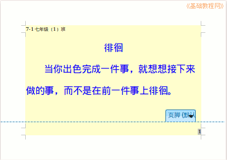
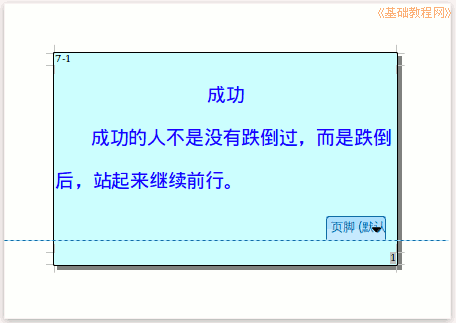

2015-2016 第一学期七年级文字处理和网页教学设计
作者：TeliuTe 来源：基础教程网
二十四、学会页眉，页脚，页码 返回目录 下一课
（一）教学设计
1、学习目标：
2、注意事项：绕过弯来，既不要跳也不要落，一楼过了二楼
3、教学过程：
1）教师准备学案和板书；
2）学生整队进入，开机抄黑板上笔记；
3）教师讲解板书演示操作；
4）学生打指法、日志、完成操作；
5）教师打勾记录学生指法成绩，检查日志和操作；
注：学生抄完笔记就开始打指法、日志，老师讲完后再继续完成；
（二）板书设计(学生笔记)
第24课 学会页眉，页脚，页码
1.格式页面32开，段落4.1.5倍行距
2.“插入,页眉，默认”，输入班级
3.点插入，页脚，下边出现光标
4.再点插入，字段，页码，右对齐
第24a课 学会页面,边框.
2015-12-11 17:02
1.页面32开,段落,页眉,页脚.
2.点"格式,页面,边框".
3.线条选第二个全部.
4.阴影选第二个右下,确定.
--
2015年12月07日 星期一 12:36
--
操作图示：


（三）课后记
先把字体颜色输入好
然后把32开，横向，4字符，1.5倍行距演示
--
字符颜色还容易改成背景色，给文字加背景色
1班有个打的很慢的，老是做不完
--
字段里面页码插入进去，背景色有的不容易看到虚框
没什么太难的，都可以做出来也是
--
上周七、八年级都占了一节课唱歌去了
8-1占了两节一周课都唱歌
--
1班有抄袭的，看时间是蒋卓轩的给马涛林和马静怡抄袭
--
周五来上3、4班的，一节课没上就有点野了
不用客气该训的训，该骂的骂了，不能惯出毛病
--
下好大雪今天
1、2班上一节其他的，等一等3、4班
不是很难，偷懒做不出来的，敲一棍子另外挨一顿训
--
3、4班期末又不占课了，1、2班没上，把边框又补一下
课上得有些混乱了，下周应该不会再这样
--
做的很快，慢慢可以增加容量和增加难度
不至于在指法上卡着，只是多余时间都去玩游戏
--
引导着做一些别的什么
还没想出来好的内容
返回目录 下一课
本教程由86团学校TeliuTe制作|著作权所有
基础教程网：http://teliute.org/
美丽的校园……
转载和引用本站内容，请保留作者和本站链接。